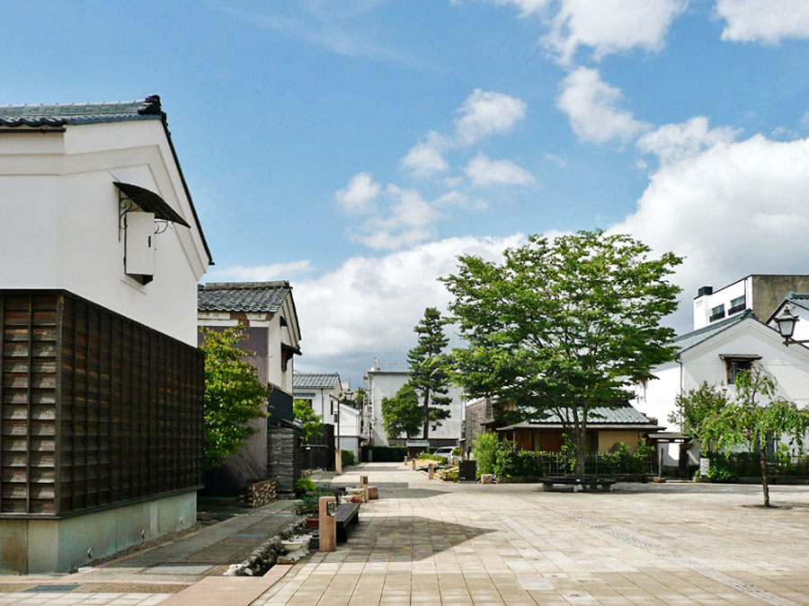

く ： 蔵の辻に集まれ！ 食べて遊んで 結の祭り
一言でいうと？
江戸の商人の名残。蔵に囲まれた新名所

お総社のななめ向かいにある白壁の蔵のおしゃれな一角、通称「蔵の辻」
なんのための場所？
昔は商人たちの蔵、今は街づくりの場
この地区では江戸時代以降、関西から北陸方面への物資の中継基地として栄えており、それぞれ商人たちの蔵が並んでいました。
もともとそれを取り壊して大型商業施設を建てる予定だったのが、近くに住む人たちのはたらきかけによって蔵を残して活用しようという方向になりました。
何度も話し合い、協定を結び、蔵を直したり街並みを整えて今の蔵の辻ができたのです！
「結の祭り」とは？
蔵の辻で開かれる屋台やパフォーマンス！
「結の祭り」は福井県出身の人や福井県に住んでいる人によって開かれているお祭りです。
地元の食材を使った食べ物がでる屋台や、全国で活躍しているアーティストによる音楽やダンスのパフォーマンスを楽しむことができます。
会場が大きくないぶん、目の前で見ることができるライブは注目です！
白壁と黒い瓦と緑の木々たち。色の調和がおしゃれでお気に入りのスポットの一つです！たまにバザーなどが行われているので、ふらっと立ち寄っても面白い場所だと思います。